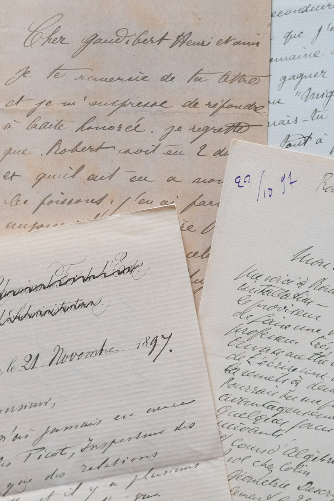

Season 1, Episode 2 — Grant's Web (Class of 1843)

Ulysses S. Grant said his happiest day at West Point was the day he left it. But the connections he made there — grudgingly, accidentally, in spite of himself — changed the course of American history.
In the spring of 1839, a 17-year-old from Georgetown, Ohio stepped off a steamboat onto the grounds of the United States Military Academy at West Point. He was short, shy, and deeply unhappy. He did not want to be there.
His father, Jesse Grant, had arranged the appointment without consulting him. Grant was too shy to say no — so he went. He later wrote: "If I could have got out of West Point, I would have done so with great joy. But I had not the moral courage to resist."
He arrived and immediately hated everything: the discipline, the uniforms, the academic rigor, the daily inspections, the endless drilling. This was not the life he wanted. He wanted to be a farmer, a businessman, anything but a soldier.
Here is one of the most famous accidents in American history: Grant's real name was Hiram Ulysses Grant. When his father wrote to Congressman Thomas Hamer requesting the appointment, Hamer did not know the boy's full name. He assumed "Ulysses" was the first name and that "Simpson" (Grant's mother's maiden name) was his middle name. He wrote on the nomination form: "Ulysses S. Grant."
Grant tried to correct it when he arrived at West Point. The paperwork had already been processed. The name stuck. He was "U.S. Grant" from then on — and his classmates, with the dark humor of bored teenagers, started calling him "Sam" — Uncle Sam.
Key fact: "Ulysses S. Grant" was a paperwork error. His real name was Hiram Ulysses Grant. The "S" stands for nothing — though his classmates joked it stood for "Surrender."
Academically, Grant was average at best. He graduated 21st of 39 in the Class of 1843 — solidly in the middle. He was strong in mathematics but weak in languages and tactics. He read novels under his blankets after lights-out, accumulating demerits for it.
But put him on a horse, and Grant transformed. He was the finest rider at the Academy — possibly the finest the Academy had ever seen. He set a high-jump record that stood for 25 years. Cadets would gather just to watch him ride. On horseback, the shy, awkward boy from Ohio became something else: graceful, confident, almost elegant.

The personal letters of Civil War generals reveal the relationships that shaped their decisions
The famous story of Grant as a drunkard is largely myth — a caricature invented by his political enemies and later amplified by Lost Cause writers who needed to diminish the man who beat Lee. The truth is more nuanced: Grant struggled with loneliness and separation from his family in the 1850s, during his isolated postings on the West Coast. During those years, he did drink too much. But as a general in the war, he was disciplined — often the most sober man in the room. His staff reported that he drank rarely and lightly. The myth was useful to those who wanted to paint him as less than Lee. Don't fall for it.
Grant was shy and reserved. He did not make friends easily. But the few he made ran deep — deep enough to survive a war that would put them on opposite sides. Here are the three that matter most.
James Longstreet was Class of 1842, one year ahead of Grant. The exact roommate situation is debated by historians — some say they shared a room, others say they were in different barracks but close friends. What is not debated: Longstreet was the best man at Grant's wedding. They served together in the Mexican-American War. They stayed in touch during the long years of the Old Army.
Then the war came. Longstreet chose the Confederacy. Grant stayed with the Union. For four years, they were enemies. Longstreet became Lee's second-in-command — "Lee's Old War Horse." Grant became the general who beat Lee.
But here is where the story gets strange: after the war, Grant protected Longstreet. He put him on a personal pardon list even though Longstreet refused to ask for one. Longstreet became the only Confederate general to publicly embrace Black suffrage and join the Republican Party — a betrayal in the eyes of the South that destroyed his reputation. He did it, in part, because of Grant.
Longstreet was best man at Grant's wedding. Then they fought each other for four years. Then Grant saved him from prosecution. Then Longstreet became a Republican — for Grant. This is not a footnote. This is the heart of the story.
Simon Bolivar Buckner was Class of 1844, one year behind Grant. They knew each other at West Point — not close friends, but acquaintances in the small world of the Academy. Years later, they crossed paths again in a very different context.
In February 1862, Grant cornered Buckner's Confederate force at Fort Donelson, Tennessee. Buckner, surrounded and outnumbered, sent a note asking for surrender terms. Grant's reply became one of the most famous lines in American military history:
"No terms except an unconditional and immediate surrender can be accepted. I propose to move immediately upon your works." — Ulysses S. Grant to Simon Bolivar Buckner, Fort Donelson, February 16, 1862
Buckner was furious. He knew Grant. They had been at West Point together. How could Grant be so harsh? He felt personally betrayed. But here is the thing: Grant wasn't being personal. He was being strategic. The phrase "Unconditional Surrender" — which matched his initials U.S. — became his nickname overnight. The North had a hero.
And after the war? They reconciled. Buckner marched in Grant's funeral procession in 1885. The friendship survived the surrender.
William Tecumseh Sherman was Class of 1840, three years ahead of Grant. They did not know each other well at West Point. Their friendship was forged later, in the crucible of the war itself.
But when it formed, it was unbreakable. Sherman became Grant's most trusted commander — the man who would march through Georgia while Grant pinned Lee in Virginia. And Sherman said the most perfect line about their partnership:
"Grant stood by me when I was crazy, and I stood by him when he was drunk." — William Tecumseh Sherman
That line captures everything: loyalty, mutual defense, and the truth about both men's reputations. Sherman had a nervous breakdown early in the war, and Grant didn't abandon him. Grant faced constant rumors about drinking, and Sherman didn't waver. They were brothers.
| Stat | Number |
|---|---|
| Graduates | 56 |
| Grant's rank | 21st of 39 |
| Future generals | 7 |
| Class of 1846 comparison | 22 generals from 59 graduates |
Seven generals from 56 graduates — a rate of about 12.5%. Lower than the extraordinary Class of 1846 (37%), but one of those seven was Grant. That one name changes the math. The Class of 1843 is not the most famous class in West Point history. But it produced the man who won the war.
How this works: Work through each phase in order. Don't scroll ahead to the answers.
Cover the answers below. For each clue, respond in the form of "Who is…" or "What is…". Answers are at the bottom of this page.
Phase 1 (Fill-the-Blank):
Phase 2 (Core Jeopardy):
Phase 3 (Previously On… — Module 1):
In Module 3, we turn to the Class of 1842 — known at West Point as "the class the gods sent." Four corps commanders from one graduating class: Longstreet, Rosecrans, Pope, and D.H. Hill. These were the men Grant grew up alongside, fought alongside, and later fought against. The class that almost rivaled 1846 — but never got the credit.
If this lesson hooked you, there is one book you must read: The Personal Memoirs of Ulysses S. Grant. Written as Grant was dying of throat cancer in 1885, it is considered one of the greatest military memoirs ever written. Mark Twain published it, and it saved Grant's family from financial ruin. The prose is clear, unpretentious, and startlingly honest — much like Grant himself. You can find it free online through Project Gutenberg.
For the Grant–Longstreet relationship specifically, Elizabeth Varon's Longstreet: The Confederate General Who Defied the South (2023) is the definitive modern account of how that friendship survived the war and reshaped Reconstruction.
Have questions? Want me to dig deeper into a specific friendship or clarify something about Grant's West Point years? Just ask — I'm your teacher.